บทที่ 2 · แบบจำลองความสัมพันธ์ระหว่างข้อมูล (ER Model)
เอนทิตี แอตทริบิวต์ ความสัมพันธ์ ภาวะความสัมพันธ์ และขั้นตอนการเขียนแผนภาพ ER จากโจทย์
- อธิบายความหมายและความสำคัญของแบบจำลองข้อมูลได้
- อธิบายสัญลักษณ์ในแผนภาพ ER แบบเชน (Chen Notation) ได้ถูกต้อง
- แยกแยะเอนทิตีปกติกับเอนทิตีอ่อนแอ และจำแนกประเภทแอตทริบิวต์ได้
- ระบุระดับความสัมพันธ์และภาวะความสัมพันธ์ (1:1, 1:M, M:N) ได้
- เขียนแผนภาพ ER จากโจทย์ และตรวจหาข้อผิดพลาดที่พบบ่อยได้
2.1 ความหมายและความสำคัญของแบบจำลองข้อมูล
ก่อนสร้างตารางจริง ต้องเข้าใจก่อนว่าองค์กรต้องเก็บข้อมูลอะไร และข้อมูลสัมพันธ์กันอย่างไร การออกแบบนิยมแบ่งแบบจำลองเป็น 3 ระดับ
ประโยชน์ของการเขียนแบบจำลองก่อน: ผู้พัฒนากับผู้ใช้สื่อสารตรงกัน · พบความต้องการที่ขาดหายตั้งแต่ต้น · ลดต้นทุนแก้ไขภายหลัง · ได้ตารางที่ซ้ำซ้อนต่ำ
2.2 สัญลักษณ์พื้นฐานของแผนภาพ ER
แผนภาพ ER (Entity Relationship Diagram) เสนอโดย Peter Chen (1976) เอกสารนี้ใช้สัญลักษณ์แบบเชน
| สัญลักษณ์ | ชื่อ | ความหมาย |
|---|---|---|
| ▭ สี่เหลี่ยมผืนผ้า | Entity | สิ่งที่ต้องเก็บข้อมูล เช่น นิสิต รายวิชา |
| ▭▭ สี่เหลี่ยมสองชั้น | Weak Entity | ต้องอาศัยเอนทิตีอื่นจึงระบุตัวตนได้ |
| ⬭ วงรี | Attribute | คุณสมบัติของเอนทิตี |
| ⬭ วงรี + ขีดเส้นใต้ | Key Attribute | ระบุตัวตนของสมาชิกแต่ละรายได้ |
| ◎ วงรีสองชั้น | Multivalued Attribute | มีได้หลายค่า |
| ⬭ วงรีเส้นประ | Derived Attribute | คำนวณจากแอตทริบิวต์อื่น เช่น อายุ |
| ◇ ข้าวหลามตัด | Relationship | ความเกี่ยวข้องระหว่างเอนทิตี |
| ═ เส้นคู่ | Total Participation | สมาชิกทุกรายต้องมีส่วนร่วมในความสัมพันธ์ |
นอกจากแบบเชนยังมี Crow's Foot (draw.io, Lucidchart ใช้เป็นค่าเริ่มต้น) และ IDEF1X (DBeaver ใช้) — สื่อความหมายเดียวกัน ต่างแค่รูปแบบการวาด ควรอ่านได้ทุกแบบ
2.3 เอนทิตี
เอนทิตี (Entity) คือสิ่งที่องค์กรสนใจเก็บข้อมูล อาจจับต้องได้ (นิสิต อาจารย์) หรือเป็นแนวคิด (รายวิชา การลงทะเบียน) ตั้งชื่อด้วยคำนามเอกพจน์
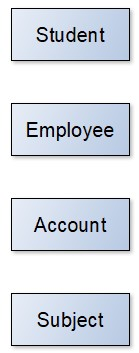
เอนทิตีอ่อนแอ (Weak Entity) ระบุตัวตนด้วยตนเองไม่ได้ ต้องอาศัย เอนทิตีเจ้าของ (Owner Entity) เช่น ที่นั่ง A1 — ทุกโรงภาพยนตร์ก็มี A1 จึงต้องระบุชื่อโรงด้วย
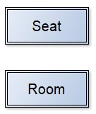
ถามว่า “ถ้าลบเอนทิตีเจ้าของทิ้ง ข้อมูลนี้ยังมีความหมายอยู่หรือไม่” — ถ้าไม่มีความหมาย แสดงว่าเป็นเอนทิตีอ่อนแอ
จงระบุว่าข้อใดเหมาะเป็นเอนทิตีอ่อนแอ พร้อมระบุเอนทิตีเจ้าของ
(ก) ห้องพักในโรงแรม
(ข) ลูกค้า
(ค) รายการสินค้าในใบสั่งซื้อ
(ง) ผู้อยู่ในอุปการะของพนักงาน (Dependent)
(ก) อ่อนแอ — เจ้าของคือ โรงแรม (ห้อง 101 มีทุกโรงแรม)
(ข) ปกติ
(ค) อ่อนแอ — เจ้าของคือ ใบสั่งซื้อ (รายการที่ 1, 2, 3 ของใบไหน)
(ง) อ่อนแอ — เจ้าของคือ พนักงาน (ถ้าพนักงานลาออก ข้อมูลผู้อยู่ในอุปการะก็ไม่มีความหมาย)
2.4 แอตทริบิวต์
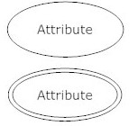
| ประเภท | ความหมาย | ตัวอย่าง |
|---|---|---|
| Simple | แบ่งย่อยไม่ได้ | เพศ, gpa |
| Key | ค่าไม่ซ้ำ ใช้ระบุตัวตน | stdid, เลขบัตรประชาชน |
| Composite | แบ่งย่อยได้ | ที่อยู่ → บ้านเลขที่ ถนน จังหวัด |
| Multivalued | 1 สมาชิกมีหลายค่า | เบอร์โทร, ทักษะ |
| Derived | คำนวณได้ ไม่ต้องเก็บ | อายุ (จาก birthday) |
| Nullable | ยอมให้ยังไม่มีค่า | วันที่สำเร็จการศึกษา, เกรดที่ยังไม่ประกาศ |
2.4.1 Key Attribute
ขีดเส้นใต้ชื่อแอตทริบิวต์
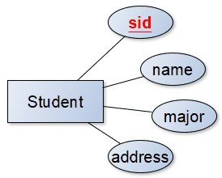
2.4.2 Composite Attribute
แตกวงรีย่อยออกจากวงรีหลัก
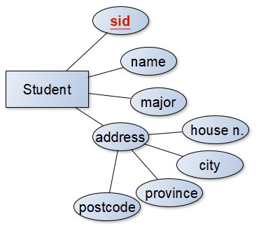
2.4.3 Multivalued Attribute
วงรีสองชั้น เช่น นิสิต 1 คนมีหลายทักษะ
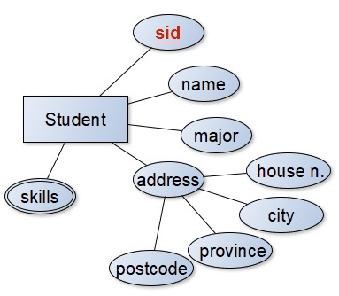
ห้ามเก็บหลายค่าไว้ในช่องเดียว เช่น phone = '081-1111111, 043-222222' ค้นหาและแก้ไขยาก ผิดหลัก 1NF — วิธีที่ถูกคือแยกเป็นตารางใหม่ (บทที่ 3)
2.4.4 Derived Attribute
วงรีเส้นประ เช่น age คำนวณจาก birthday — ถ้าเก็บอายุไว้ต้องแก้ทุกปี ลืมแก้ข้อมูลผิดทันที ในบทที่ 5 เราจะคำนวณอายุด้วย TIMESTAMPDIFF()
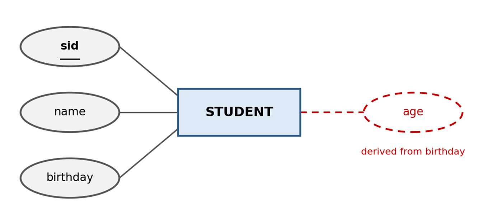
2.4.5 Nullable Attribute
ค่าว่าง (NULL) ไม่ใช่ 0 หรือช่องว่าง แต่หมายถึง “ยังไม่ทราบค่า” — ในฐานข้อมูลกรณีศึกษา มีนิสิตหลายคนที่ยังไม่มี gpa หรือ birthday และแอตทริบิวต์คีย์ห้ามเป็นค่าว่าง
จงจำแนกประเภทแอตทริบิวต์ (อาจมีได้มากกว่า 1 ประเภท)
(ก) เลขประจำตัวประชาชน
(ข) ที่อยู่
(ค) อายุ
(ง) ความสามารถพิเศษ
(จ) วันเกิด
(ฉ) ชื่อ-นามสกุล
(ก) Key / Simple
(ข) Composite
(ค) Derived
(ง) Multivalued
(จ) Simple (อาจเป็น Nullable)
(ฉ) Composite (ชื่อ + นามสกุล)
2.5 ความสัมพันธ์
ความสัมพันธ์ (Relationship) ใช้สี่เหลี่ยมข้าวหลามตัด ตั้งชื่อด้วยคำกริยา เช่น นิสิต ลงทะเบียน กลุ่มเรียน, อาจารย์ สอน กลุ่มเรียน
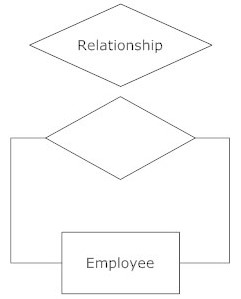
2.5.1 ระดับของความสัมพันธ์ (Degree)
- Unary / Recursive — ภายในเอนทิตีเดียว เช่น รายวิชาเป็นวิชาบังคับก่อนของรายวิชาอื่น (คอลัมน์
pre) - Binary — ระหว่าง 2 เอนทิตี (พบมากที่สุด)
- Ternary — ระหว่าง 3 เอนทิตีพร้อมกัน ในทางปฏิบัติมักแปลงเป็น Binary หลายชุด
2.5.2 ภาวะความสัมพันธ์ (Cardinality)
1 : 1 (One-to-One)
พนักงาน 1 คนมีห้องทำงาน 1 ห้อง และห้อง 1 ห้องเป็นของพนักงานคนเดียว
1 : M (One-to-Many)
อาจารย์ 1 คนสอนได้หลายกลุ่มเรียน แต่กลุ่มเรียนหนึ่งมีผู้สอน 1 คน
M : N (Many-to-Many)
นิสิต 1 คนลงได้หลายกลุ่มเรียน และกลุ่มเรียนหนึ่งมีนิสิตหลายคน
วิธีหาภาวะความสัมพันธ์
ถามทั้งสองฝั่ง: “A 1 ตัว สัมพันธ์กับ B ได้กี่ตัว?” และ “B 1 ตัว สัมพันธ์กับ A ได้กี่ตัว?”
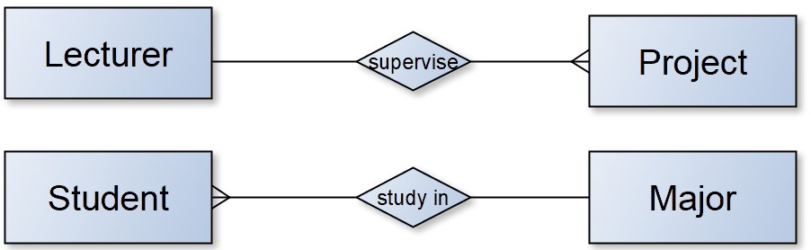
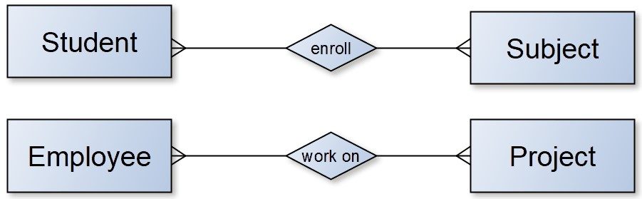
2.5.3 ความสัมพันธ์แบบวกกลับ
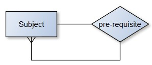
2.5.4 แอตทริบิวต์ของความสัมพันธ์
เกรดไม่ใช่คุณสมบัติของนิสิต (นิสิตคนหนึ่งได้หลายเกรด) และไม่ใช่ของรายวิชา (วิชาหนึ่งให้หลายเกรด) จึงต้องเก็บไว้ที่ความสัมพันธ์
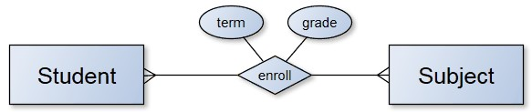
แอตทริบิวต์ของความสัมพันธ์ M:N จะกลายเป็นคอลัมน์ในตารางเชื่อม (Junction Table) เสมอ เช่น grade ในตาราง enroll
จงระบุภาวะความสัมพันธ์ (1:1, 1:M, M:N) พร้อมเหตุผล
- รายวิชา — กลุ่มเรียน (section)
- นิสิต — บัญชีผู้ใช้ระบบ (1 คน 1 บัญชี)
- ลูกค้า — สินค้า (ในการสั่งซื้อ)
- รายวิชา — รายวิชา (วิชาบังคับก่อน ตามกรณีศึกษา)
- 1:M — 1 วิชาเปิดได้หลายกลุ่ม แต่กลุ่มหนึ่งเป็นของวิชาเดียว
- 1:1
- M:N — ลูกค้าซื้อได้หลายสินค้า สินค้าหนึ่งถูกซื้อโดยหลายลูกค้า
- 1:M แบบวกกลับ — วิชาหนึ่งมีวิชาบังคับก่อนได้ไม่เกิน 1 วิชา แต่วิชาหนึ่งเป็นวิชาบังคับก่อนของหลายวิชาได้ (เช่น CS002 เป็น pre ของ CS005–CS008)
2.6 ขั้นตอนการเขียนแผนภาพ ER จากโจทย์
- ขีดเส้นใต้ คำนาม ที่มีข้อมูลของตัวเอง → มักเป็นเอนทิตี
- คำนามที่เป็นเพียงรายละเอียดของคำนามอื่น → แอตทริบิวต์
- ระบุแอตทริบิวต์คีย์ (ถ้าไม่มี ให้สร้างรหัสใหม่)
- ขีดเส้นใต้ คำกริยา ที่เชื่อมคำนาม → ความสัมพันธ์
- กำหนดภาวะความสัมพันธ์ โดยถามจากทั้งสองฝั่ง
- ตรวจว่ามีข้อมูลที่ต้องเก็บไว้ที่ความสัมพันธ์หรือไม่
- ตรวจเอนทิตีอ่อนแอ และแอตทริบิวต์พหุค่า
ตัวอย่างที่ 1 · เก็บข้อมูลนิสิต
โจทย์ เก็บรหัสนิสิต ชื่อ ที่อยู่ (บ้านเลขที่ ถนน ตำบล อำเภอ จังหวัด รหัสไปรษณีย์) และงานอดิเรก โดยนิสิต 1 คนมีงานอดิเรกได้หลายอย่าง
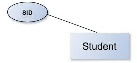
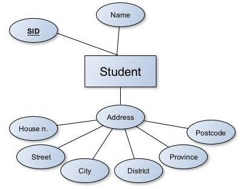
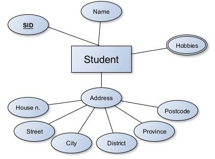
ตัวอย่างที่ 2 · ระบบข้อมูลบุคลากร
โจทย์ เก็บพนักงาน (รหัส ชื่อ เงินเดือน วันเกิด เบอร์โทร) แผนก (รหัส ชื่อ ห้องทำงาน) โครงการ (รหัส ชื่อ งบประมาณ วันเริ่ม วันสิ้นสุด) พนักงานสังกัด 1 แผนก แผนกมีหลายคน แต่ละแผนกมีหัวหน้า 1 คน พนักงานทำได้หลายโครงการ โครงการมีพนักงานหลายคน และต้องเก็บตำแหน่งหน้าที่ในโครงการ
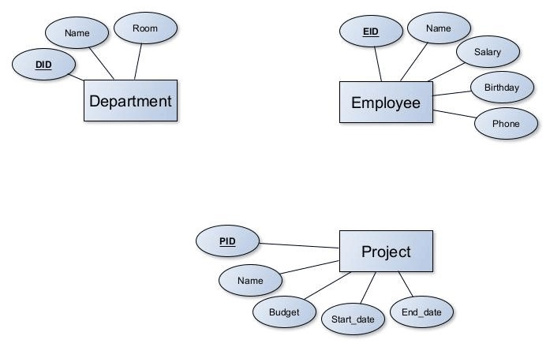
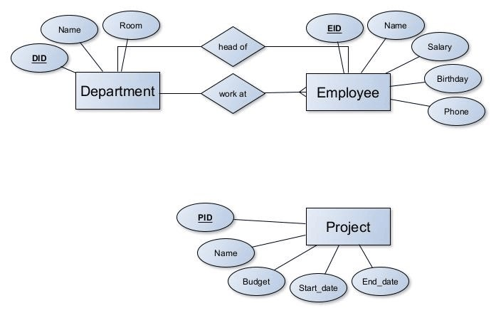
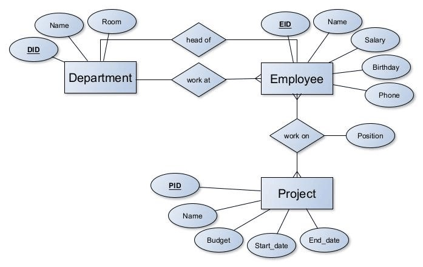
โจทย์ “ห้องสมุดเก็บข้อมูล สมาชิก (รหัส ชื่อ อีเมล) และ หนังสือ (ISBN ชื่อเรื่อง ผู้แต่ง ซึ่งเล่มหนึ่งมีผู้แต่งได้หลายคน) สมาชิกยืมหนังสือได้หลายเล่ม หนังสือเล่มหนึ่งถูกยืมโดยสมาชิกหลายคนในเวลาต่างกัน และต้องเก็บวันที่ยืมและวันที่คืน”
จงระบุ เอนทิตี, คีย์, แอตทริบิวต์พิเศษ, ความสัมพันธ์และภาวะความสัมพันธ์ และแอตทริบิวต์ของความสัมพันธ์
- เอนทิตี: Member (คีย์ member_id), Book (คีย์ ISBN)
- แอตทริบิวต์พิเศษ: ผู้แต่ง (author) เป็น Multivalued → วงรีสองชั้น
- ความสัมพันธ์: Member borrow Book แบบ M:N
- แอตทริบิวต์ของความสัมพันธ์: borrow_date, return_date
2.7 กรณีศึกษา: ระบบลงทะเบียนเรียน
กรณีศึกษาหลักที่ใช้ตลอดทั้งเล่ม มีข้อกำหนดดังนี้
- เก็บข้อมูลนิสิต: รหัส ชื่อ สาขา เกรดเฉลี่ยสะสม วันเกิด
- เก็บข้อมูลรายวิชา: รหัส ชื่อ หน่วยกิต สาขาที่รับผิดชอบ และวิชาบังคับก่อน (ไม่เกิน 1 วิชา)
- เก็บข้อมูลอาจารย์: รหัส ชื่อ เงินเดือน สาขา
- รายวิชาหนึ่งเปิดได้หลายกลุ่มเรียนในแต่ละภาคเรียน กลุ่มเรียนหนึ่งมีผู้สอน 1 คน อาจารย์ 1 คนสอนได้หลายกลุ่ม
- นิสิตลงทะเบียนได้หลายกลุ่มเรียน กลุ่มเรียนหนึ่งมีนิสิตหลายคน และต้องเก็บเกรด
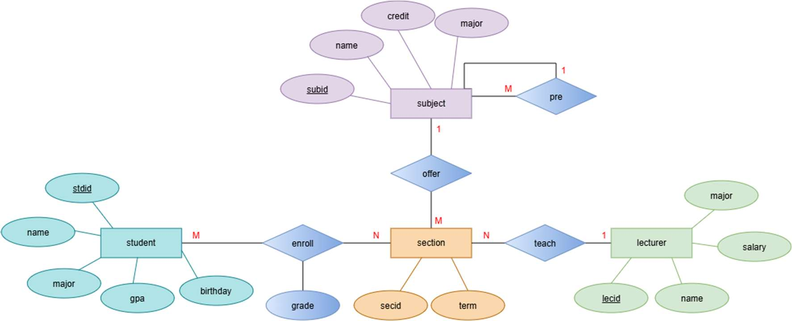
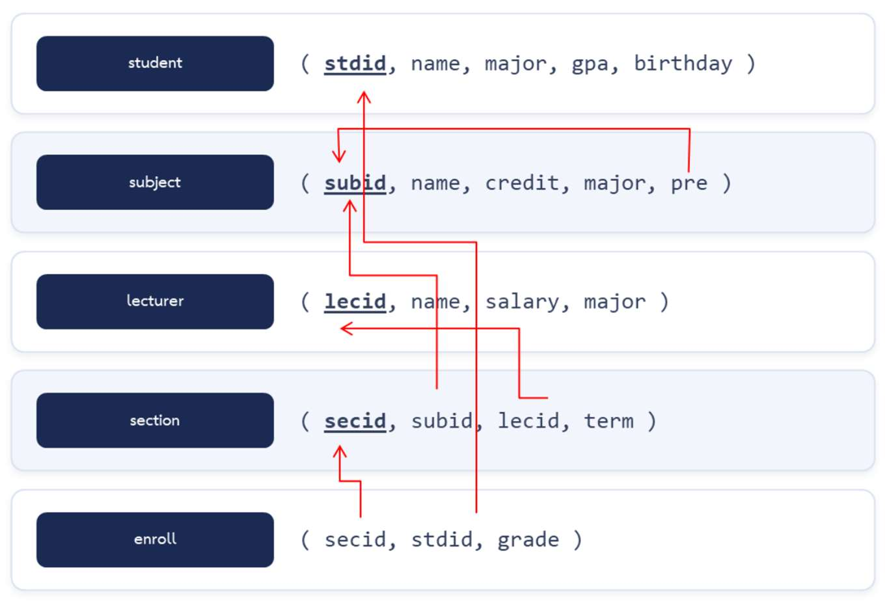
เหตุใดจึงต้องมีเอนทิตีกลุ่มเรียน (SECTION) แทนที่จะให้นิสิตลงทะเบียนกับรายวิชา (SUBJECT) โดยตรง
เพราะรายวิชาเดียวกันเปิดสอนได้หลายครั้ง ต่างภาคเรียน ต่างผู้สอน เช่น CS001 เปิดถึง 7 กลุ่ม (secid 1, 11, 15, 24, 35, 39, 49) ถ้าลงทะเบียนกับรายวิชาตรง ๆ จะไม่รู้ว่านิสิตเรียนภาคไหน กับอาจารย์คนไหน และนิสิตที่สอบตกแล้วลงซ้ำ (เช่น 60010 Gon ลง CS001 ถึง 3 ครั้ง ใน secid 1, 15, 35) จะเก็บไม่ได้เพราะคีย์ซ้ำ
2.8 ข้อผิดพลาดที่พบบ่อยในการเขียนแผนภาพ ER
| ข้อผิดพลาด | ผลกระทบ | แนวทางแก้ไข |
|---|---|---|
| ตั้งชื่อความสัมพันธ์เป็นคำนาม เช่น “การลงทะเบียน” | สับสนกับเอนทิตี | ใช้คำกริยา เช่น “ลงทะเบียน” |
| เก็บค่าที่คำนวณได้เป็นแอตทริบิวต์ปกติ เช่น อายุ | ต้องแก้ทุกปี เสี่ยงไม่สอดคล้อง | เก็บวันเกิด แล้วคำนวณเมื่อใช้ |
| ใช้แอตทริบิวต์ธรรมดาแทนพหุค่า | เก็บได้ค่าเดียว / หลายค่าในช่องเดียว | ใช้วงรีสองชั้น แล้วแยกตารางตอนแปลง |
| ลืมกำหนดภาวะความสัมพันธ์ | แปลงเป็นตารางไม่ได้ ไม่รู้ว่า FK อยู่ฝั่งไหน | ระบุ 1:1, 1:M, M:N ทุกเส้น |
| เชื่อมเอนทิตีกันโดยตรงด้วยเส้น | ไม่รู้ว่าสัมพันธ์กันอย่างไร | ต้องมีข้าวหลามตัดคั่นเสมอ |
| สร้างเอนทิตีที่มีแอตทริบิวต์เดียว | ซับซ้อนโดยไม่จำเป็น | ยุบเป็นแอตทริบิวต์ของเอนทิตีอื่น |
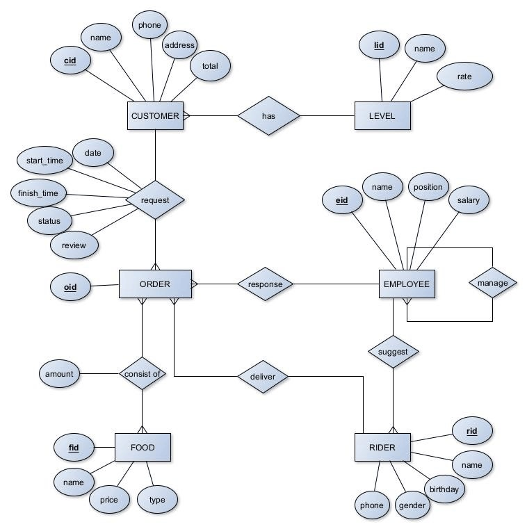
จากภาพที่ 2.30 จงตอบ
(ก) ความสัมพันธ์ใดเป็นแบบวกกลับ
(ข) amount เป็นแอตทริบิวต์ของอะไร และทำไมไม่อยู่ที่ FOOD
(ค) ความสัมพันธ์ consist of เป็นภาวะความสัมพันธ์แบบใด
(ก) manage ของ EMPLOYEE (พนักงานเป็นหัวหน้าพนักงานคนอื่น)
(ข) เป็นแอตทริบิวต์ของความสัมพันธ์ consist of — จำนวนที่สั่งขึ้นกับทั้ง “คำสั่งซื้อใด” และ “อาหารใด” ไม่ใช่คุณสมบัติของอาหารอย่างเดียว
(ค) M:N — คำสั่งซื้อหนึ่งมีหลายอาหาร อาหารหนึ่งอยู่ในหลายคำสั่งซื้อ
คำถามท้ายบท
- สัญลักษณ์และองค์ประกอบ
- จงวาดสัญลักษณ์แบบเชนของ Entity, Weak Entity, Key Attribute, Multivalued Attribute, Derived Attribute และ Relationship (ตารางที่ 2.1)
- Entity — สี่เหลี่ยมผืนผ้า
- Weak Entity — สี่เหลี่ยมผืนผ้าเส้นคู่ (ความสัมพันธ์ที่ระบุตัวตนเป็นข้าวหลามตัดเส้นคู่)
- Key Attribute — วงรีที่ขีดเส้นใต้ชื่อแอตทริบิวต์
- Multivalued Attribute — วงรีเส้นคู่
- Derived Attribute — วงรีเส้นประ
- Relationship — รูปข้าวหลามตัด (สี่เหลี่ยมขนมเปียกปูน)
- จงอธิบายความแตกต่างระหว่างเอนทิตีปกติกับเอนทิตีอ่อนแอ พร้อมยกตัวอย่างที่ไม่ซ้ำกับในเอกสาร 2 ตัวอย่าง (ลบเจ้าของแล้วยังมีความหมายไหม)
เอนทิตีปกติ มีคีย์ของตัวเอง ระบุตัวตนได้โดยลำพัง ส่วนเอนทิตีอ่อนแอไม่มีคีย์ของตัวเอง ต้องอาศัยคีย์ของเอนทิตีเจ้าของร่วมกับ Partial Key และถ้าลบเจ้าของ เอนทิตีอ่อนแอจะไม่มีความหมาย
ตัวอย่าง: (1) ชั้นของอาคาร (ชั้น 1, ชั้น 2 มีทุกอาคาร) เจ้าของคือ อาคาร (2) งวดการผ่อนชำระ (งวดที่ 1, 2, …) เจ้าของคือ สัญญาเงินกู้ (3) บุตรของพนักงาน สำหรับสวัสดิการ เจ้าของคือ พนักงาน
- จงจำแนกประเภทแอตทริบิวต์: เลขบัตรประชาชน, ที่อยู่, อายุ, ความสามารถพิเศษ, วันเกิด, ชื่อ-สกุล, เบอร์โทร (มีหลายเบอร์) (Key / Composite / Derived / Multivalued)
เลขบัตรประชาชน = Key (Simple) · ที่อยู่ = Composite (บ้านเลขที่ ถนน จังหวัด รหัสไปรษณีย์) · อายุ = Derived (คำนวณจากวันเกิด) · ความสามารถพิเศษ = Multivalued · วันเกิด = Simple · ชื่อ-สกุล = Composite (ชื่อ + นามสกุล) · เบอร์โทรหลายเบอร์ = Multivalued
- ตำแหน่งพนักงาน (leader, programmer, SA, HR) ควรเป็นเอนทิตี แอตทริบิวต์ หรือค่าของแอตทริบิวต์ เพราะเหตุใด (ค่าที่เป็นไปได้ ≠ attribute)
leader, programmer, SA, HR เป็นค่าของแอตทริบิวต์ position ของเอนทิตี Employee ไม่ใช่แอตทริบิวต์แยกกัน 4 ตัว (ไม่ควรวาดวงรี leader, programmer, …) — แต่ถ้าต้องเก็บข้อมูลของตำแหน่งเพิ่ม เช่น เงินเดือนขั้นต่ำ หน้าที่ ก็ควรยกเป็นเอนทิตี Position แยก
- เหตุใดจึงไม่ควรเก็บ “อายุ” เป็นแอตทริบิวต์ปกติ และควรแสดงในแผนภาพอย่างไร (Derived — วงรีเส้นประ)
อายุเปลี่ยนทุกวันตามเวลา ถ้าเก็บไว้ต้องคอยแก้ตลอด และอาจขัดกับวันเกิด (ไม่สอดคล้อง) ควรเก็บวันเกิดแล้วคำนวณอายุเมื่อต้องการ ในแผนภาพแสดงอายุเป็น Derived Attribute (วงรีเส้นประ)
- เหตุใดเกรดจึงต้องเป็นแอตทริบิวต์ของความสัมพันธ์ enroll ไม่ใช่ของ student หรือ subject (ขึ้นกับทั้งสองฝั่ง)
เกรดขึ้นกับทั้งนิสิตและกลุ่มเรียนพร้อมกัน — นิสิตคนเดียวมีหลายเกรด (หลายวิชา) และวิชาเดียวมีหลายเกรด (หลายคน) ถ้าเก็บที่ student จะรู้ไม่ได้ว่าเป็นเกรดวิชาใด ถ้าเก็บที่ subject จะรู้ไม่ได้ว่าเป็นของใคร จึงเป็นแอตทริบิวต์ของความสัมพันธ์ M:N
- ภาวะความสัมพันธ์
- จงระบุภาวะความสัมพันธ์: พนักงาน–ที่จอดรถ (1 คน 1 ช่อง), สาขาวิชา–นิสิต, อาจารย์–วิชา (สอน), นิสิต–วิชา (ลงทะเบียน) (ถามทั้งสองฝั่ง)
พนักงาน–ที่จอดรถ = 1:1 · สาขาวิชา–นิสิต = 1:M (สาขาหนึ่งมีนิสิตหลายคน นิสิตสังกัดสาขาเดียว) · อาจารย์–วิชา = M:N · นิสิต–วิชา = M:N
- จงระบุภาวะความสัมพันธ์: ประเทศ–เมืองหลวง, ผู้ป่วย–แพทย์ (การนัดตรวจ), ลูกค้า–ใบสั่งซื้อ, ใบสั่งซื้อ–สินค้า (1:1 / 1:M / M:N)
ประเทศ–เมืองหลวง = 1:1 · ผู้ป่วย–แพทย์ = M:N (มีแอตทริบิวต์วันเวลานัด) · ลูกค้า–ใบสั่งซื้อ = 1:M · ใบสั่งซื้อ–สินค้า = M:N (มีแอตทริบิวต์จำนวนและราคา)
- ความสัมพันธ์ Person has email (คนหนึ่งมีหลายอีเมล) ควรเขียนเป็นเอนทิตีแยก หรือเป็นแอตทริบิวต์พหุค่า เปรียบเทียบข้อดีข้อเสีย (Multivalued vs Entity)
แอตทริบิวต์พหุค่า — แผนภาพเรียบง่าย เหมาะเมื่อเก็บเพียงที่อยู่อีเมล · เอนทิตีแยก — เหมาะเมื่ออีเมลมีข้อมูลประกอบ เช่น ประเภท (งาน/ส่วนตัว) วันยืนยัน อีเมลหลัก หรือมีความสัมพันธ์กับเอนทิตีอื่น แต่แผนภาพซับซ้อนกว่า
ทั้งสองแบบเมื่อแปลงเป็นตารางได้ผลคล้ายกัน คือ ตาราง
person_email(person_id, email)แยกออกมา - จงยกตัวอย่างความสัมพันธ์แบบวกกลับ 3 ตัวอย่าง พร้อมระบุภาวะความสัมพันธ์ (supervise, pre, married to)
(1) Employee supervise Employee — 1:M (2) Subject is prerequisite of Subject — 1:M (ในกรณีศึกษา 1 วิชามี pre ได้ 1 วิชา) (3) Person married to Person — 1:1 (4) Member refers Member (ผู้แนะนำสมาชิก) — 1:M
- จงยกตัวอย่างความสัมพันธ์ระดับสาม (Ternary) 1 ตัวอย่าง และแสดงวิธีแปลงเป็นความสัมพันธ์ระดับสองหลายชุด (เอนทิตีกลาง)
ตัวอย่าง: Lecturer–Subject–Room ผ่านความสัมพันธ์ teach (อาจารย์สอนวิชาใดในห้องใด) แปลงโดยยกความสัมพันธ์เป็นเอนทิตีกลาง Class (หรือ section) แล้วสร้างความสัมพันธ์ระดับสอง 3 ชุด: Lecturer 1:M Class, Subject 1:M Class, Room 1:M Class — ตรงกับที่กรณีศึกษาใช้เอนทิตี SECTION
- เขียนแผนภาพ ER จากโจทย์
- Employee เก็บรหัสพนักงาน ชื่อ ที่อยู่ เบอร์โทร เพศ วันเกิด และตำแหน่ง พนักงานมีเบอร์โทรได้หลายเบอร์แต่ห้ามซ้ำ ตำแหน่งมี 4 แบบ คือ หัวหน้าแผนก โปรแกรมเมอร์ เลขา และเจ้าหน้าที่ทั่วไป จงเขียน ER (phone = Multivalued)
เอนทิตีเดียว EMPLOYEE แอตทริบิวต์: emp_id (Key), name, address (อาจเป็น Composite), phone (Multivalued — วงรีเส้นคู่), gender, birthday, position (Simple — ค่าเป็นหนึ่งใน 4 ตำแหน่ง ไม่ต้องวาดแยก) และอาจเพิ่ม age เป็น Derived
- โรงภาพยนตร์ มี 3 โรง (VIP, Honeymoon, BigHall) แต่ละโรงมีที่นั่ง A1, A2, …, B1, … ราคาไม่เท่ากัน เก็บจำนวนที่นั่ง ขนาดโรง (กว้าง×ยาว) และขนาดจอ จงเขียน ER และระบุเอนทิตีอ่อนแอ (Seat = Weak Entity, size = Composite)
- THEATER: theater_name, n_seat (อาจเป็น Derived จากจำนวน SEAT), size (Composite: width, length), screen_size
- SEAT (Weak Entity): seat_no เป็น Partial Key (ขีดเส้นใต้เส้นประ), price
- ความสัมพันธ์ has (Identifying, ข้าวหลามตัดเส้นคู่) THEATER 1:M SEAT — SEAT มีส่วนร่วมแบบบังคับ (Total)
SEAT เป็นเอนทิตีอ่อนแอ เพราะที่นั่ง A1 มีในทุกโรง ต้องใช้ชื่อโรง + เลขที่นั่งจึงระบุได้
- AmICrazy Software House เก็บพนักงาน (รหัส ชื่อ เงินเดือน แผนก หัวหน้า) ลูกค้า (รหัส ชื่อ เบอร์โทร) ที่จ้างทำโปรเจคได้หลายครั้ง การประชุมลูกค้า–พนักงาน (วัน สถานที่) โปรเจค (รหัส ชื่อ งบ วันเริ่ม ระยะเวลา ≤ 100 วัน วันเสร็จจริง) พนักงานหลายคนทำโปรเจคเดียวโดยมีหน้าที่ต่างกัน และการลา (ประเภท วันที่ จำนวนวัน ≤ 5) จงเขียน ER (6 เอนทิตี + supervise วกกลับ)
- เอนทิตี: EMPLOYEE(emp_id, name, salary) · DEPARTMENT(dept_id, name) · CUSTOMER(cus_id, name, phone {Multivalued}) · PROJECT(proj_id, name, budget, start_date, duration, finish_date) · LEAVE(Weak ของ EMPLOYEE: leave_date, type, days)
- EMPLOYEE work in DEPARTMENT — M:1
- EMPLOYEE supervise EMPLOYEE — วกกลับ 1:M
- CUSTOMER hire PROJECT — 1:M
- CUSTOMER meet EMPLOYEE — M:N แอตทริบิวต์ meet_date, place
- EMPLOYEE work on PROJECT — M:N แอตทริบิวต์ role
- EMPLOYEE request LEAVE — 1:M (Identifying)
ข้อกำหนด duration ≤ 100 และ days ≤ 5 เขียนเป็นหมายเหตุบนแผนภาพ แล้วบังคับด้วย CHECK ตอนสร้างตาราง
- คณะวิทยาการสารสนเทศ มี 5 สาขา (CS, MIS, NMD, IS, MC) นิสิตปี 4 ทำโปรเจคเดี่ยวหรือคู่ มีที่ปรึกษาและอาจมีที่ปรึกษาร่วม (ต่างสาขาได้) สอบ proposal, project#1, project#2 เก็บวันสอบ ประเภท ผล กรรมการ 2 คน สถานะ เทอมเริ่ม/เสร็จ และ keyword หลายคำ จงเขียน ER (supervise มีแอตทริบิวต์ position)
- เอนทิตี: MAJOR(major_id, name) · STUDENT(std_id, name) · LECTURER(lec_id, name) · PROJECT(proj_id, title, status, start_term, finish_term, keyword {Multivalued}) · PRESENTATION(Weak ของ PROJECT: exam_type, exam_date, result)
- STUDENT/LECTURER belong to MAJOR — M:1
- STUDENT do PROJECT — M:1 (โปรเจคมีนิสิต 1–2 คน)
- LECTURER supervise PROJECT — M:N แอตทริบิวต์ position (ที่ปรึกษาหลัก / ร่วม)
- PROJECT has PRESENTATION — 1:M (Identifying)
- LECTURER is committee of PRESENTATION — M:N (ครั้งละ 2 คน)
- ระบบห้องสมุด เก็บสมาชิก หนังสือ (มีผู้แต่งหลายคน) หมวดหมู่ และการยืม-คืน (วันยืม วันกำหนดคืน วันคืนจริง ค่าปรับ) จงเขียน ER (borrow = M:N)
- เอนทิตี: MEMBER(member_id, name, phone, status) · BOOK(book_id, title, author {Multivalued} หรือเอนทิตี AUTHOR แยก, copies) · CATEGORY(cat_id, name)
- BOOK belong to CATEGORY — M:1
- MEMBER borrow BOOK — M:N แอตทริบิวต์ borrow_date, due_date, return_date, fine
- (ถ้ายกผู้แต่งเป็นเอนทิตี) BOOK written by AUTHOR — M:N
- คลินิก เก็บผู้ป่วย แพทย์ (แพทย์มีความเชี่ยวชาญหลายด้าน) การนัดหมาย (วัน เวลา อาการ) และยาที่จ่ายในแต่ละการนัด (ชื่อยา จำนวน) จงเขียน ER (การนัด–ยา = M:N + amount)
- เอนทิตี: PATIENT(patient_id, name, birthday) · DOCTOR(doctor_id, name, specialty {Multivalued}) · APPOINTMENT(appt_id, appt_date, appt_time, symptom) · MEDICINE(med_id, name)
- PATIENT make APPOINTMENT — 1:M · DOCTOR attend APPOINTMENT — 1:M
- APPOINTMENT prescribe MEDICINE — M:N แอตทริบิวต์ amount
- ร้านกาแฟ เก็บเมนู (ราคาตามขนาด S/M/L) ลูกค้าสมาชิก (สะสมแต้ม) ใบเสร็จ และรายการในใบเสร็จ จงเขียน ER และอธิบายว่ารายการในใบเสร็จเป็นเอนทิตีอ่อนแอหรือไม่ (Weak Entity ของใบเสร็จ)
- เอนทิตี: MENU(menu_id, name) · MENU_PRICE(Weak ของ MENU: size เป็น Partial Key, price) · MEMBER(member_id, name, points) · RECEIPT(receipt_no, receipt_time, total {Derived}) · RECEIPT_ITEM(Weak ของ RECEIPT: line_no, qty, unit_price)
- MEMBER pay RECEIPT — 1:M (ลูกค้าทั่วไปไม่ต้องมีสมาชิก = Partial)
- RECEIPT contains RECEIPT_ITEM — 1:M (Identifying) · RECEIPT_ITEM of MENU_PRICE — M:1
รายการในใบเสร็จเป็นเอนทิตีอ่อนแอ — “รายการที่ 1” มีในทุกใบเสร็จ ต้องใช้เลขที่ใบเสร็จ + ลำดับรายการจึงระบุได้ และถ้าลบใบเสร็จ รายการก็ไม่มีความหมาย
- วิเคราะห์และตรวจแผนภาพ
- จากแผนภาพ ER ของกรณีศึกษา (ภาพที่ 2.28) เหตุใดจึงต้องมีเอนทิตี SECTION แทนที่จะให้นิสิตลงทะเบียนกับ SUBJECT โดยตรง (เปิดหลายครั้ง ต่างเทอม ต่างผู้สอน)
วิชาเดียวเปิดสอนได้หลายครั้ง หลายภาคเรียน และหลายผู้สอน ถ้าให้นิสิตลงทะเบียนกับ SUBJECT โดยตรงจะไม่รู้ว่าเรียนเทอมไหน กับอาจารย์คนใด และนิสิตจะลงวิชาเดิมซ้ำ (เช่น เรียนซ้ำหลังได้ F) ไม่ได้ เพราะคู่ (นิสิต, วิชา) ซ้ำ SECTION ทำให้ “การเปิดสอนแต่ละครั้ง” มีตัวตน
เฉลยSELECT subid, COUNT(*) AS n_open, COUNT(DISTINCT lecid) AS n_lecturer, COUNT(DISTINCT term) AS n_term FROM section GROUP BY subid ORDER BY n_open DESC;
▸ ผลลัพธ์ (แสดง 5 จาก 17 แถว)subid n_open n_lecturer n_term CS001 7 3 6 CS002 7 6 4 CS004 7 3 5 CS009 4 3 4 MA001 4 4 4 - จากภาพที่ 2.30 ระบบสั่งอาหารออนไลน์ จงระบุเอนทิตีทั้งหมด ความสัมพันธ์ทั้งหมด และภาวะความสัมพันธ์ของแต่ละความสัมพันธ์ (order–food = M:N)
เอนทิตี 6 ตัว: CUSTOMER, LEVEL, ORDER, FOOD, EMPLOYEE, RIDER
- CUSTOMER has LEVEL — M:1 (ลูกค้าหลายคนอยู่ระดับเดียวกัน)
- CUSTOMER request ORDER — 1:M แอตทริบิวต์ date, start_time, finish_time, status, review
- ORDER consist of FOOD — M:N แอตทริบิวต์ amount
- EMPLOYEE response ORDER — 1:M (พนักงานหนึ่งคนรับผิดชอบหลายคำสั่งซื้อ)
- RIDER deliver ORDER — 1:M
- EMPLOYEE suggest RIDER — 1:M (พนักงานแนะนำไรเดอร์เข้าทำงาน)
- EMPLOYEE manage EMPLOYEE — วกกลับ 1:M
- จงตรวจแผนภาพ ER ของเพื่อนในโจทย์ AmICrazy โดยใช้ตารางข้อผิดพลาดหัวข้อ 2.8 เป็นเกณฑ์ แล้วเสนอแนวทางแก้ไข (ชื่อความสัมพันธ์ = คำกริยา)
คำตอบขึ้นกับแผนภาพของเพื่อน ประเด็นที่ควรตรวจ:
- ชื่อเอนทิตีเป็นคำนามเอกพจน์ ชื่อความสัมพันธ์เป็นคำกริยา
- ทุกเอนทิตีมีคีย์ (ยกเว้นเอนทิตีอ่อนแอที่มี Partial Key)
- ไม่ใส่ FK เป็นแอตทริบิวต์ในแผนภาพ ER (ความสัมพันธ์แสดงด้วยเส้น)
- ภาวะความสัมพันธ์ระบุครบทั้งสองฝั่ง และแอตทริบิวต์ของ M:N (role, meeting date) อยู่ที่ความสัมพันธ์
- ไม่วาดค่าของแอตทริบิวต์ (เช่น ประเภทการลา) เป็นแอตทริบิวต์แยก